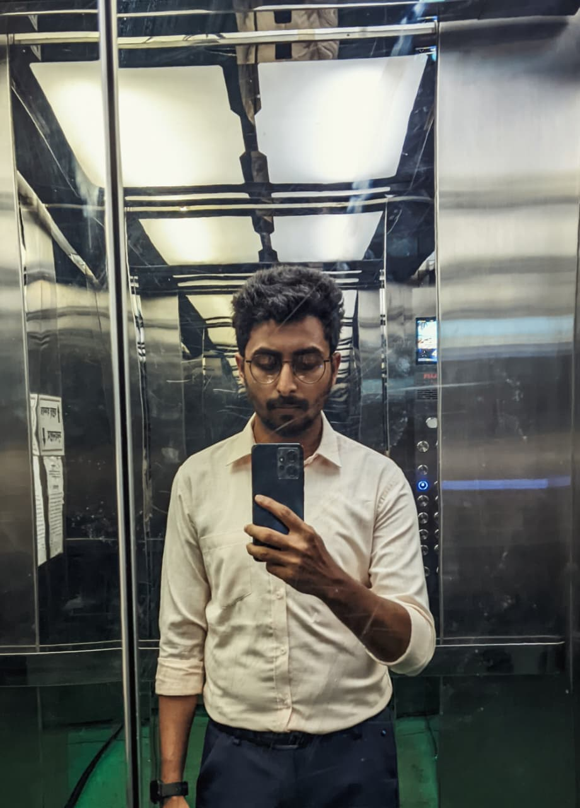
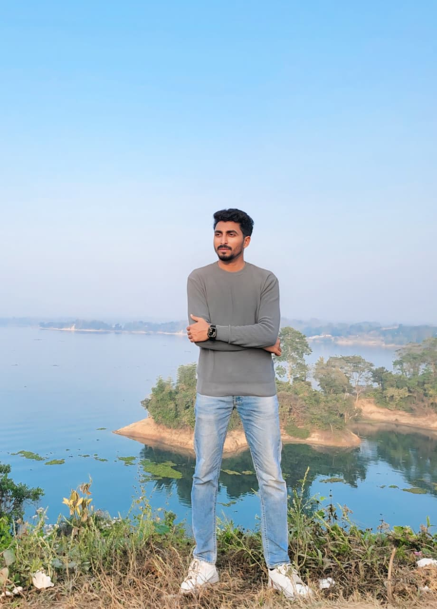
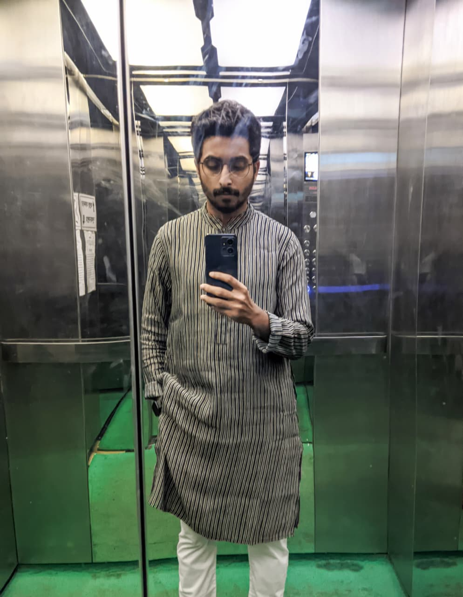
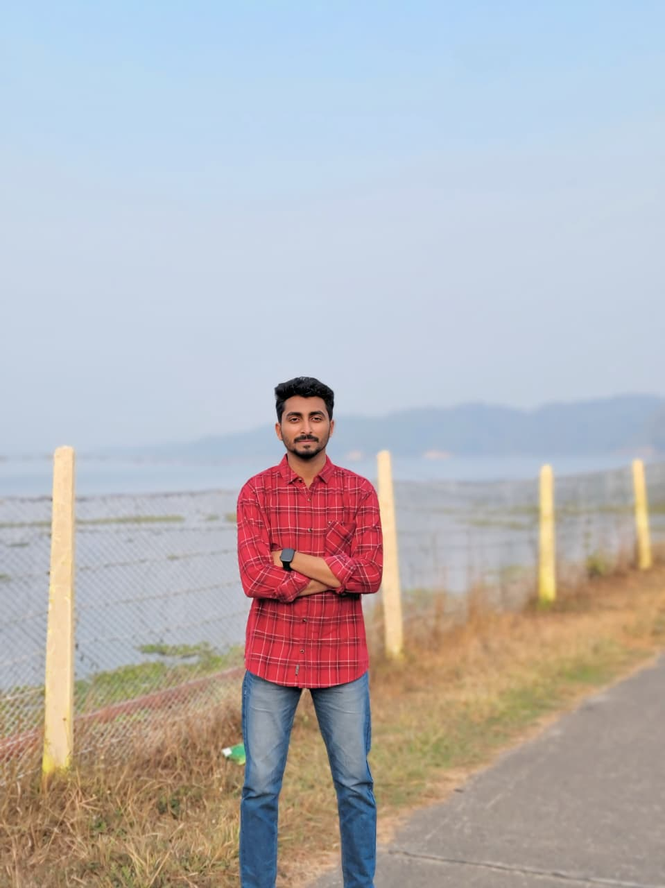
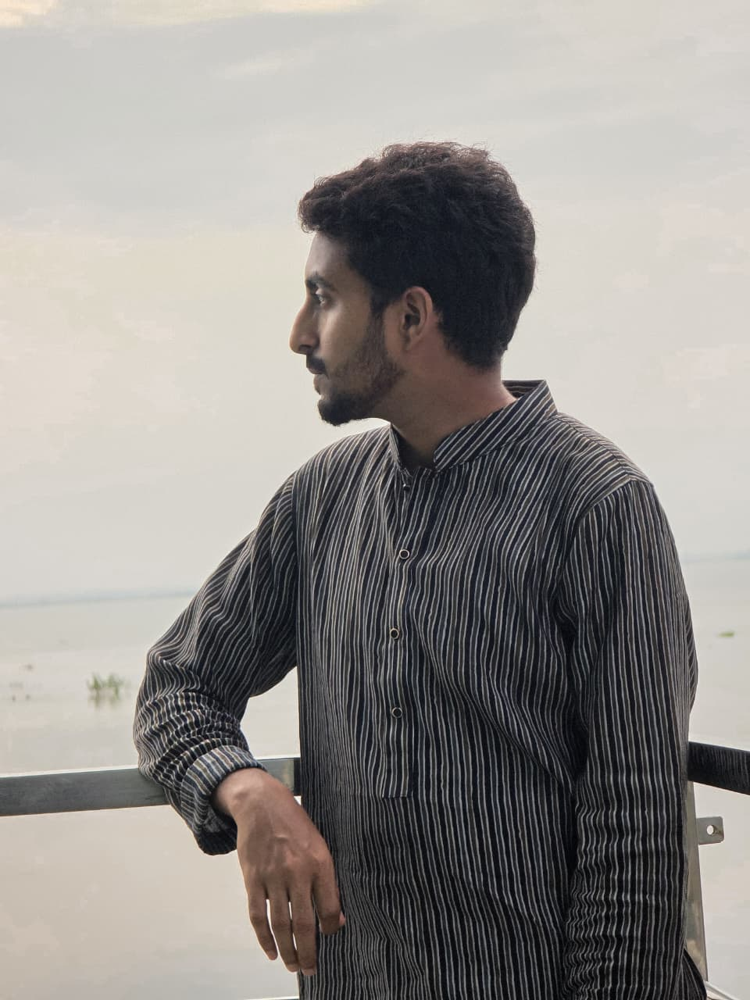

Name: Abdullah Al Mamun
Age: 27 years
Date of Birth: 07/08/1998
Height: 5'6"
Religion: Islam
Address: Village: Raninagar, PO: Sherkole, Thana: Singra, District: Natore
Email: abdullah.aust177@gmail.com
Phone: 01784-917724
Name: Abdullah Al Mamun
Age: 27 years
Date of Birth: 07/08/1998
Height: 5'6"
Religion: Islam
Address: Village: Raninagar, PO: Sherkole, Thana: Singra, District: Natore
Email: abdullah.aust177@gmail.com
Phone: 01784-917724
Father's Occupation: Businessman & Farmer as well
Mother's Occupation: Housewife
Siblings: 1 Elder Sister
Siblings Details: Mst Asha Khatun (BSc in EEE from UAP, Currently pursuing MSc from Germany)
School: Sherkole Samjan Ali High School (2014)
College: Nawab Siraj-Ud-Dowla Government College, Natore (2016)
University: Ahsanullah University of Science and Technology, BSc in EEE (2022)
Current Profession: Assistant Engineer
Company: Northern Electricity Supply PLC (NESCO)
Experience: 1 Year+
I’m a very friendly and outgoing person who loves to connect with people. I’m not extremely pious, but I’m trying to focus more on that side of life nowadays. I hang out with my friends a lot and really enjoy spending time in nature and open spaces. I’m not much of a reader, but I love watching movies whenever I get some free time. I don’t really think much about how long I’ll live — I believe life is short, so I try to enjoy every moment of it. I love living in the moment and making the most of the time I have. I also have a strong desire to travel and explore new places. I want my life to be full of adventure. I have a few close friends and well-wishers, and with them and my family, I just want to spend the rest of my life happily.
Describe what you're looking for in a partner, your values, and your future aspirations.




